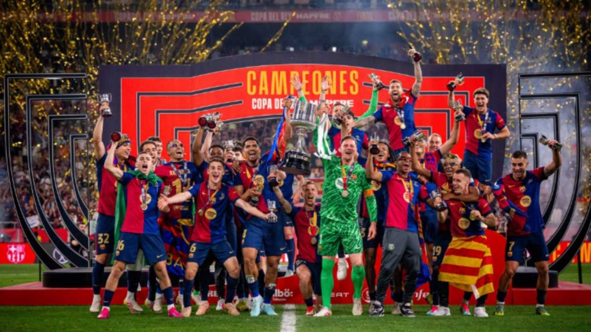
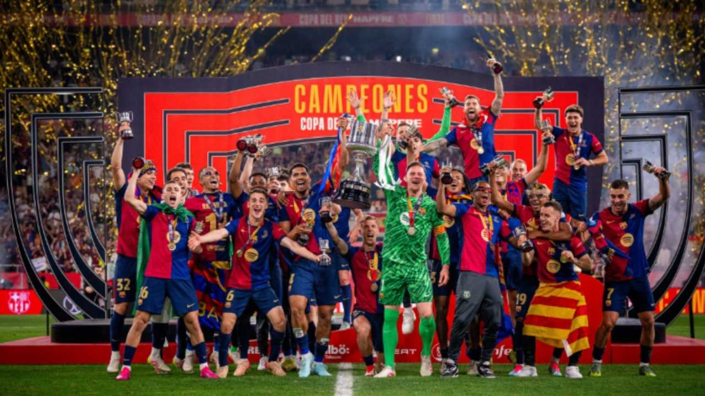

Barcelona Campeon de la Copa del Rey
El FC Barcelona se coronó campeón de la Copa del Rey 2025 tras vencer al Real Madrid en una emocionante final. Joules Koundé anotó el gol decisivo en el tiempo extra.
El FC Barcelona se coronó campeón de la Copa del Rey 2025 tras vencer al Real Madrid en una emocionante final. Joules Koundé anotó el gol decisivo en el tiempo extra.
El Real Madrid conquistó su 15ª Champions tras vencer al borussia-dortmund en una final histórica disputada en Londres. Daniel Carvajal fue elegido el mejor jugador del partido.

Argentina mantiene el primer puesto en el ranking FIFA tras su victoria en la Copa América 2024. Liderados por Lionel Messi, siguen dominando el fútbol mundial.
El Superclásico argentino entre Boca Juniors y River Plate terminó en un emocionante triunfo del equipo de River por 2-1. Ambos equipos demostraron por qué este es uno de los partidos más apasionantes del fútbol mundial.
Después de años de especulación, Kylian Mbappé firmó contrato con el Real Madrid para la temporada 2025/26. El delantero francés usará el número 9.
La Conmebol anunció un nuevo formato para la Copa Libertadores: incluirá 48 equipos, con una fase de grupos ampliada similar a la Champions League.